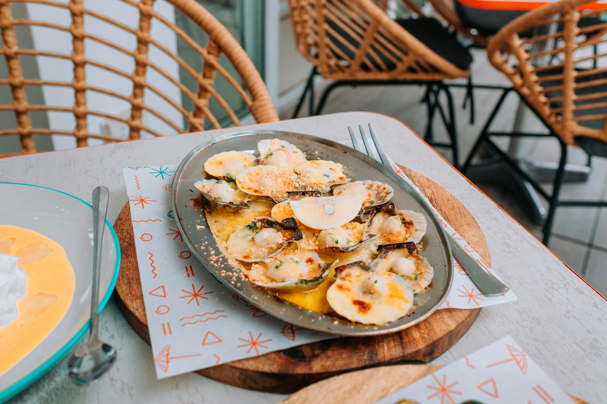
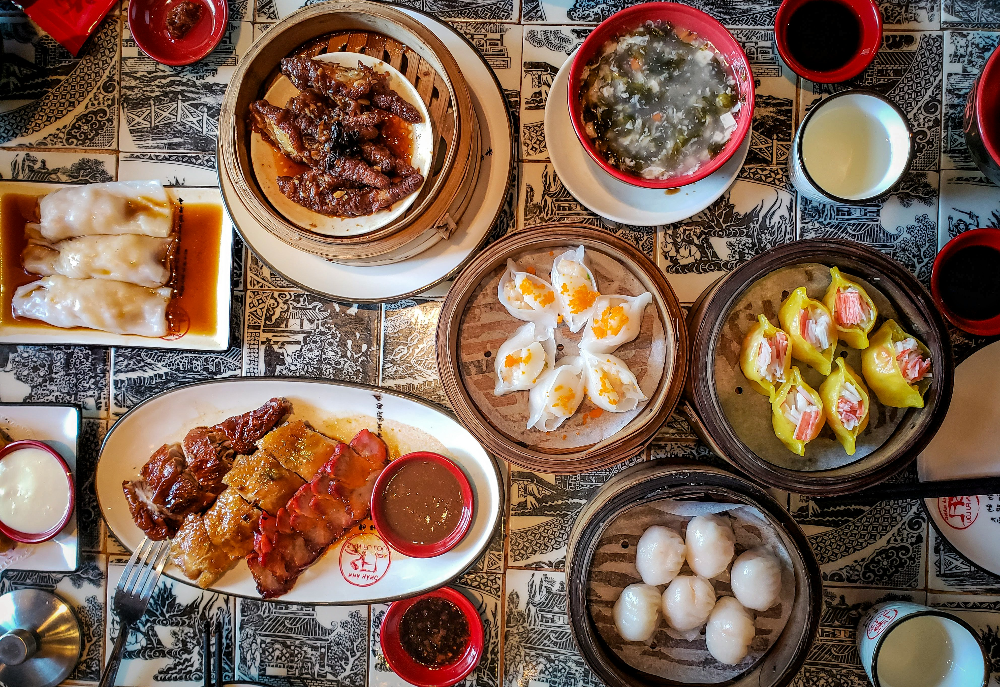

Pan-Asian Restaurants

Sakura Japanese Kitchen
The best sushi and sashimi on the island, made with the morning's fresh catch from the Taniti harbour. The omakase set is a standout — let the chef choose for you and you won't be disappointed. Reservations strongly recommended for dinner.
$$$$ · Japanese
Reserve
Golden Wok
A Taniti City institution that has been serving authentic Cantonese and Sichuan dishes for over 15 years. The weekend dim sum is legendary among locals and visitors alike. Busy at lunch — arrive early or expect a short wait.
$$ · Chinese
Reserve
Lemongrass Thai
Bright, fragrant Thai cooking in a relaxed open-air setting just off the main harbour road. The green curry and pad see ew are regulars on every table. Great value for money and one of the friendliest front-of-house teams on the island.
$$ · Thai
Reserve
Ramen Taniti
A small, no-frills ramen bar that packs in locals every lunchtime. Broths are made fresh each morning from island pork and seaweed, and the char siu pork is slow-cooked overnight. Only eight seats — cash only, no reservations.
$ · Japanese
Reserve
The Pacific Fusion Table
Taniti's most creative restaurant blends Japanese and Polynesian flavours with locally foraged ingredients. Think tuna tataki with coconut ponzu, or miso-glazed taro. A genuinely special dining experience — book well in advance for weekend dinners.
$$$ · Pacific Fusion
Reserve
Bamboo Garden
A popular pan-Asian kitchen serving a broad menu of Chinese, Thai, and Vietnamese dishes in generous portions. A great option for groups with mixed tastes. The spring rolls and satay skewers are reliable crowd-pleasers. Open late on weekends.
$$ · Pan-Asian
Reserve